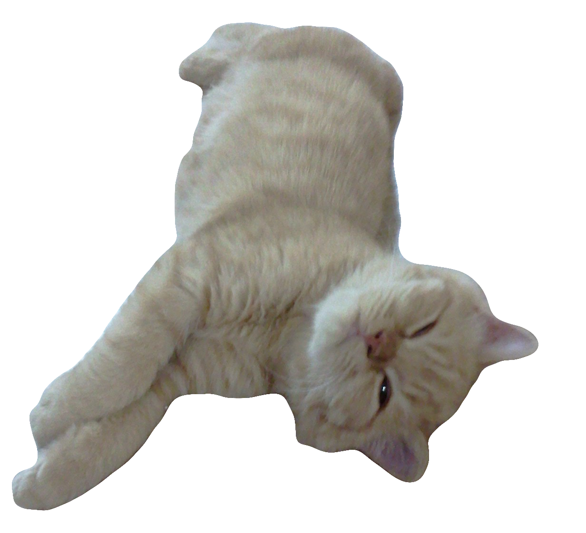

사적인 이야기
어린이 시절
한 살 즈음으로 추정.
보리는 펫샵 출신의 고양이이다. 9년 전 나는 고양이가 너무 키우고 싶었고, 간신히 허락을 맡아 보리를 키울 수 있었다. 당시에는 입양을 하는 추세는 커녕 고양이를 키우는 사람이 지금보다 훨씬 적었고, 나는 13살이었다.
보리는 집에 오자 제대로 적응을 못했는데, 아주 아팠다. 밥도 제대로 먹질 못하고 힘들어 했었는데, 일주일에 몇 번은 병원을 가고 매번 약을 챙겨먹어야 했다. 심지어 보리는 어릴때부터 선천성 백내장이라는 진단을 받았다. 어릴때부터 성한 곳이 없었지만, 다행스럽게도 노력에 의해 보리는 점점 기운을 차렸고, 지금은 엄청난 돼지 고양이가 되었다.
자라면서

2014년 6월 3일, 아침 8시 23분의 보리.
보리가 어른이 되어가면서 생긴 지병은 방광염이다. 세네살부터 거의 매년 보리는 방광염으로 고생을 했다. 페르시안 종 특성이 방광이 좋지 않다는 것이긴 했지만, 이로 인해 보리에게 들어간 시간과 병원비는 적지 않다. 그나마 지금은 어느 정도 예방법을 터득하여 병원에 가는 빈도수가 훨씬 줄었다.
어느덧 9년
지난 8월 25일의 보리.
보리를 키우며 여러 일들이 있었다. 문틈새로 보리가 탈출하여 잃어버렸던 보리가 알고보니 집 앞 계단 앞에 쪼그리고 앉아있던 기억이 난다. 중학생 때는 보리와 놀다가 팔에 물린 상처가 너무 많아 오해를 샀던 경험도 있다. 그때나 지금이나 옷에는 밝은 색 털이 잔뜩 묻어 있다.
생각해보면 나는 훌륭한 집사가 아니다. 보리를 처음 만났을때 나는 어렸고, 주변의 어른들도 고양이에 대해 무지했다. 보리를 더 행복한 고양이로 만들어주고 싶다고 생각했을 때 보리는 이미 중년을 넘어섰고, 이제는 보리와 이별하기 위한 준비도 차근차근 시작해야 한다는 생각이 자주 든다.